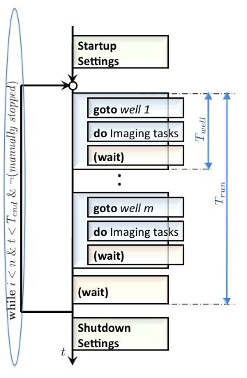

|
This page last changed on Jun 01, 2011 by haclaudi.
Measurement Properties

Properties for Identification and Organization of the Measured Images
- Image Filename: A unique name has to be given for each measurement for identification purpose. In Image Filename three types of a name are choosable. The name is composed out of several parameters. The exact description of the parameters in the selected filename can be read, if the mouse is moved to the field containing the filename. The parameters contain a name, information about measurement details like position in a well, number of the well, etc.
- Output Directory: In addition the folder, where the images should be stored, has to be given. If many microscopists are using the microscope, each user can save his images in a separate folder.
- Save images in: This is another helpful feature to organize the data storage. The data for each well can be stored in a separate folder or all images can be stored in one folder.
- Image File Type: In general, using a non-compressing image format, like tif, is recommended. The file format can be chosen depending on the program used for data post-processing.
Timing Parameters
- Measurement finishes - Time settings for the total running time of the measurement. There are three possibilities to finish a measurement. (i) The measurement can continue running until it is stopped manually, by choosing the option When finished manually. This is used, if e.g. a change in the development of the cells has to be analyzed and the microscopist does not know, when the steady-state is reached. The other two possibilities define (ii) a specific number of executions of the task (After a given number of executions), or (iii) a time period (After a given time period) as conditions for a measurement stop. The timing parameters, which define the duration of the measurement are highlighted with an ellipse in Figure 1a.
|  |
Figure 1a: Flowchart of a microplate measurement. The general description of this figure is located in Figure 1 in Setting up a Microplate Measurement. The number of executions n, the total running time of the measurement T_end as well as stopping the experiment manually defines the duration of the measurement and are highlighted by a ellipse. |
- Iterate through all the wells - Time settings for the repetition of the imaging jobs. The time parameter, which defines the length of an iteration is highlighted with an ellipse in Figure 1b. There are also three possibilities: (i) Iterate as fast as possible. The microscope iterates through all selected wells and starts without a break the second iteration. (ii) Every fixed period - The iteration through all wells will be repeated after a fixed time period. If the imaging jobs in all selected wells are finished before the period for the task is over, the microscope waits until the period time is over and then starts with the next iteration. (iii) Varying periods. With this option several period lengths can be defined. Every period is defined by the period length and the number of executions.
- Stay in one well - Time settings for one well. The time parameter, which defines the time for one well, is highlighted by an ellipse in Figure 1c. (i) As long as it needs - Here, the microscope executes the imaging jobs and immediately goes to the next well. (ii) Exactly at a given time - Here, the exact time for one well is defined. If the microscope finishes earlier, it waits.
 | All settings define a period length and include the execution time of the corresponding jobs and waiting times. If e.g. the running time T_run is 60 s, and the iteration through all wells takes already 40 s, the microscope pauses for 20 s, before it continues with the next iteration. |
|
{kind=link}
{kind=link}
{kind=link}
{kind=link}